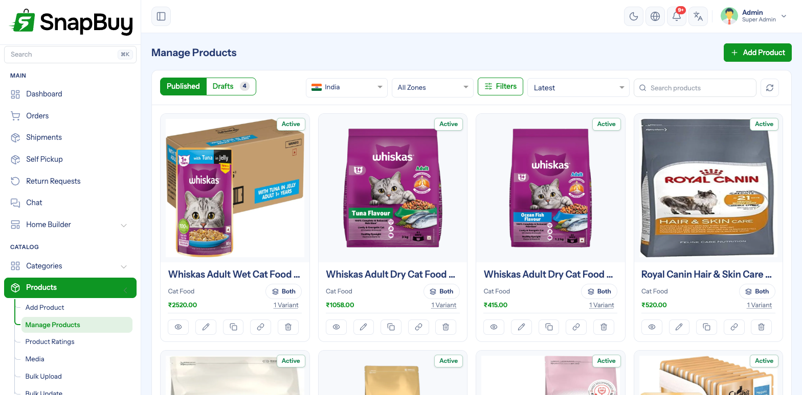
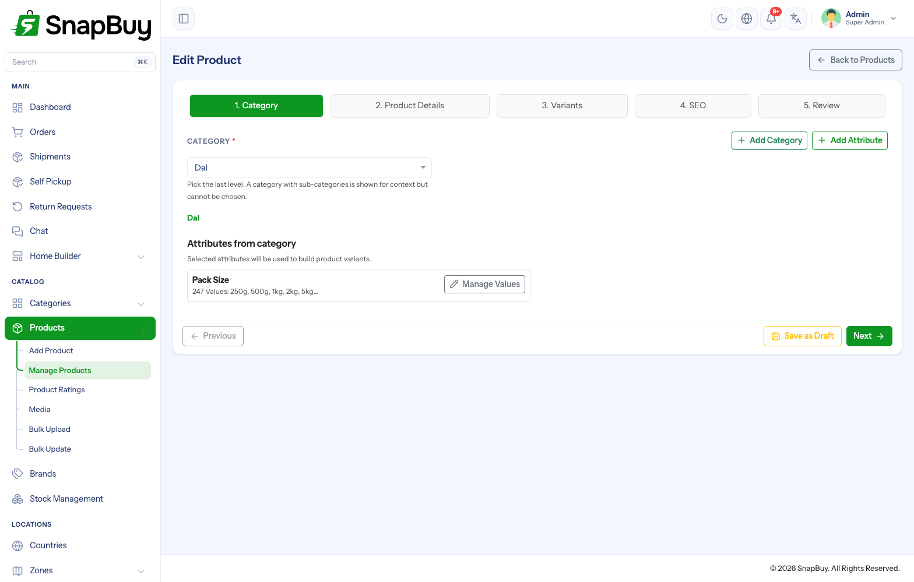
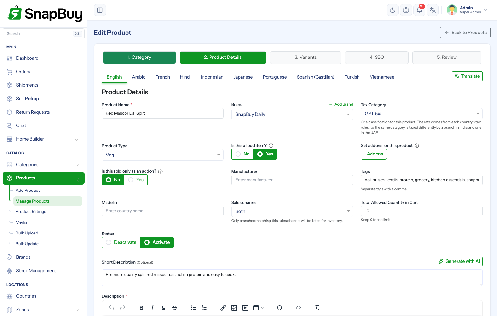
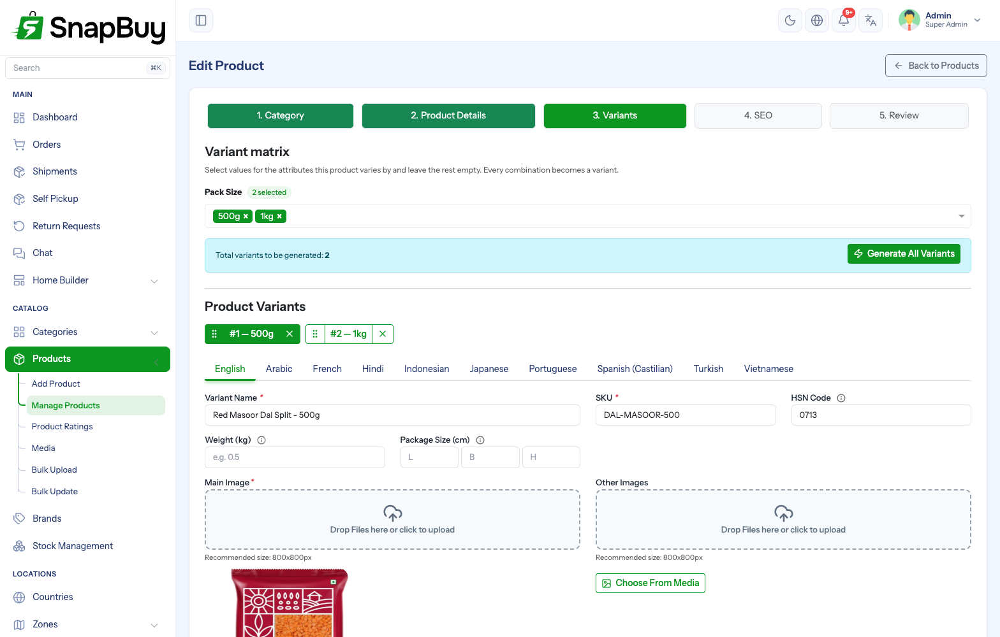
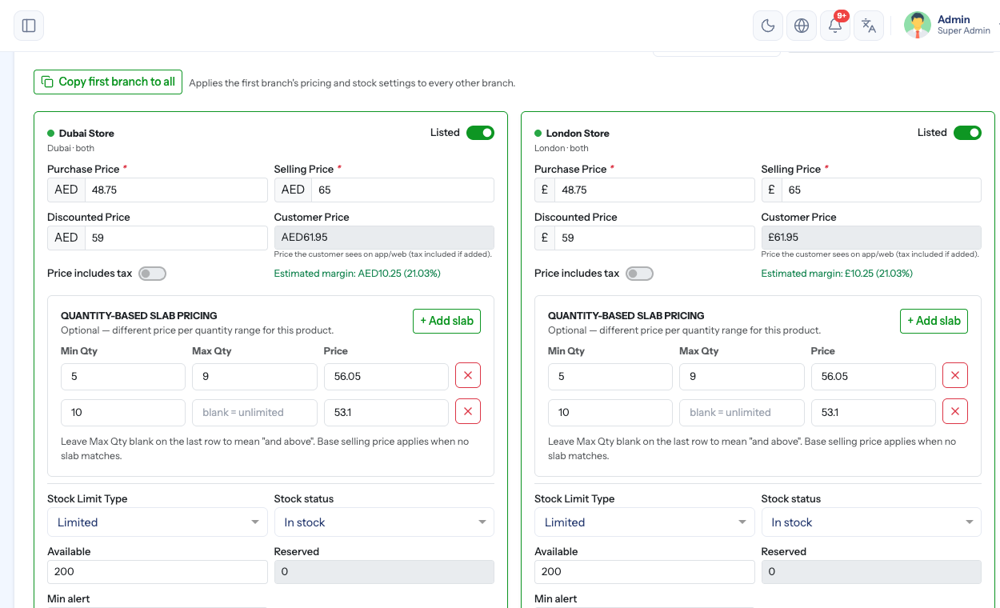
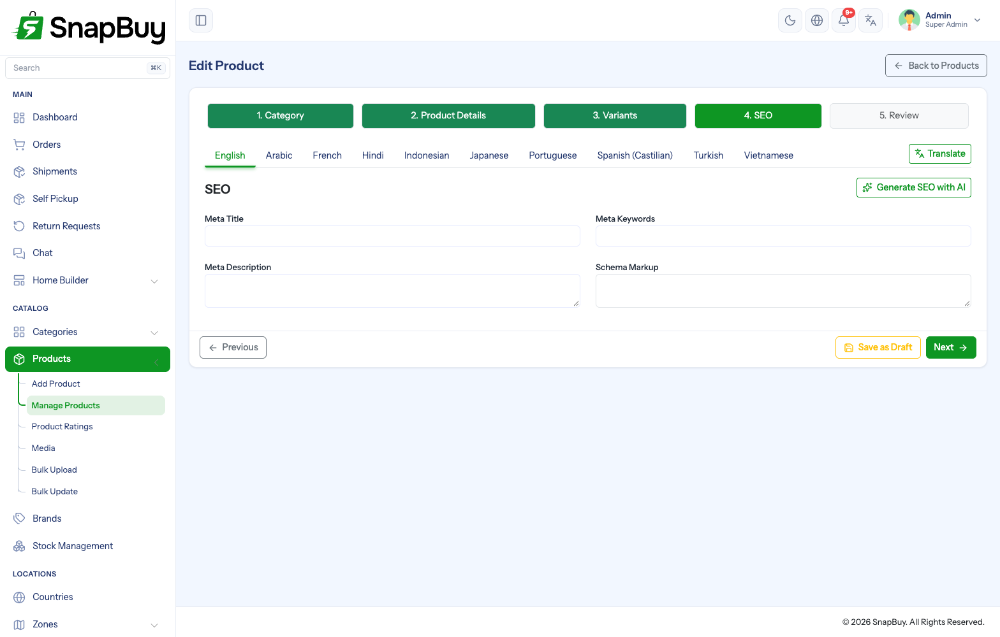
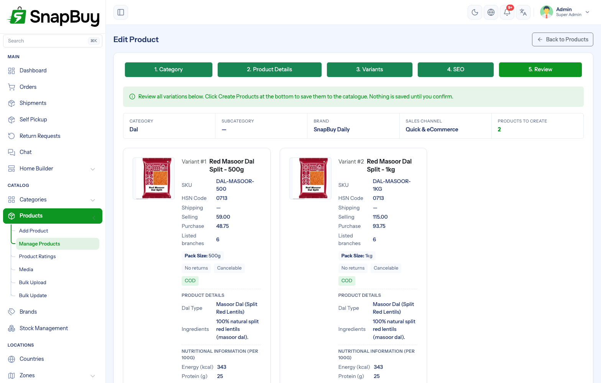

Products
Menu path: Products → Manage Products · Products → Add Product
Everything a customer can buy lives here. A product is created through a five-step wizard, and nothing reaches the catalogue until the last step is confirmed.

The listing
| Control | What it does |
|---|---|
| Published / Drafts | Two tabs. A draft is a product saved part-way through the wizard — invisible to customers until it is completed and published. |
| Country / Zone | Narrows the list to products listed at the branches of that country or zone |
| Filters | Category, brand, status, sales channel |
| Sort | Latest, name, price |
Each card shows the product’s status, category, sales channel, price and how many variants it has.
Price on the card is indicative
A product is priced per branch, so the card shows one representative figure. The real prices live on the Variants step, branch by branch.
Step 1 — Category

| Field | What it does |
|---|---|
| Category | Where the product sits in the catalogue tree |
| Attributes from category | The attributes this category offers — tick the ones this product varies by |
Pick the last level
A category that has sub-categories is shown for context but cannot be chosen. Only a leaf category accepts products.
The category decides the attributes, and the attributes decide the variants
Attributes are inherited from the category, and the values you tick here build the variant matrix in step 3. Changing the category of a product that already has variants means rebuilding them, so get this right first.
If the category has no attributes, add them under Categories → Attributes before creating the product.
Step 2 — Product Details

Identity
| Field | What it does |
|---|---|
| Product Name | Shown everywhere. Translatable — one name per language. |
| Brand | Optional. Powers brand pages and the Top Brands section in Home Builder. |
| Tax Category | One classification for the product. The rate comes from each country’s tax rules, so the same category is taxed differently by a branch in India and one in the UAE. |
| Product Type | None, Veg, Non-veg, Chemical, Eggetarian, Medical — the diet or handling marker shown on the product card |
| Is this a food item? | Made to order, with addons |
| Is this sold only as an addon? | Attachable to a dish, never listed on its own |
| Prescription Required | Shown for a Medical product. The customer must upload a prescription (image or PDF) before the order can be placed. |
| Manufacturer | Free text, printed on the product page |
| Made In | Country of origin |
| Tags | Comma-separated. They feed search and related-product matching. |
Selling rules
| Field | What it does |
|---|---|
| Sales channel | Quick commerce, eCommerce or Both. Only branches matching this channel are offered for inventory in step 3. |
| Total Allowed Quantity in Cart | The most of this product one cart may hold. 0 means no limit. |
| Status | Inactive products disappear from the apps immediately |
The sales channel decides which branches you can stock
Set it before step 3. Switching it afterwards drops the branches that no longer match, and their pricing with them.
Descriptions
| Field | What it does |
|---|---|
| Short Description | One or two lines under the product name |
| Description | The full rich-text description |
| Custom Sections | Extra structured blocks the category defines — nutrition, storage, FSSAI licence, disclaimers |
Generate with AI drafts either description from the product name and category. Treat it as a first draft and read it before saving.
Return and cancellation policy
| Field | What it does |
|---|---|
| Return Status | Returnable or Not returnable |
| Return Days | How many days after delivery a return may be raised. Shown only when returnable. |
| Cancelable | Whether the customer may cancel at all |
| Cancellable Till | The order status up to which cancelling is allowed. A product sold on both channels gets one setting for Quick and one for eCommerce, because the two move at different speeds. |
| COD Available | Whether cash on delivery may be used for this product |
These beat the global settings for this product alone
A shop-wide return window is a default. What you set here is what the customer actually gets for this product.
Step 3 — Variants
This is where price and stock live. A product has at least one variant, even when nothing varies.

The variant matrix
Tick the values for the attributes this product varies by and leave the rest empty. Every combination becomes a variant — two pack sizes and three colours make six.
Generate All Variants builds them in one go; the banner tells you how many you are about to create.
Per-variant fields
| Field | What it does |
|---|---|
| Variant Name | Shown in the variant picker — Red / 0-1 yr |
| SKU | Your own stock code. Required, and the key the bulk sheets match on. |
| HSN Code | The internationally standardised goods code used for GST and invoicing — 6109 for T-shirts. Printed on invoices when set. |
| Weight (kg) | Dead weight of one unit. Courier integrations quote and label from it. |
| Package Size (cm) | Length × breadth × height of one packed unit, used for volumetric weight |
| Main Image | The picture used on cards and listings. Recommended 800×800px. |
| Other Images | The gallery on the product page |
Choose From Media picks an image already uploaded instead of uploading it again.
A variant with no weight cannot be shipped by courier
Shiprocket refuses to quote a parcel whose weight is unknown, and the ship dialog names the products that are missing one. Fill the weight for anything you post.
Branch-wise inventory
Each card below the variant is one branch that matches the product’s sales channel.

| Field | What it does |
|---|---|
| Listed | On: customers can see and buy this SKU at this branch. Off hides it there without losing the quantities. |
| Purchase Price | What it costs you. Required — it is what the margin is calculated from. |
| Selling Price | The normal price, in that branch’s currency |
| Discounted Price | The offer price. Leave empty for none. |
| Customer Price | Read-only — what the shopper actually sees, tax included if tax is added |
| Price includes tax | On when the price you typed already has tax in it |
| Estimated margin | Read-only — selling minus purchase, as an amount and a percentage |
| Quantity-based slab pricing | Optional cheaper price per quantity band: Min Qty, Max Qty, Price. Leave the last row’s Max Qty blank to mean “and above”. The base selling price applies when no slab matches. |
| Stock Limit Type | Limited tracks quantities; Unlimited never runs out |
| Stock status | Customer-facing In stock / Out of stock, independent of the numbers — use it for a manual sell-out |
| Available | Units you can sell right now, not yet tied to open orders |
| Reserved | Units held in carts and pending orders. Managed automatically — not editable. |
| Min alert | Low-stock threshold for this branch, used for replenishment alerts and reporting |
Copy first branch to all applies the first branch’s pricing and stock to every other branch.
Check every branch that prices in another currency
The copy is a straight number copy. 65 stays 65 whether that branch charges in ₹, £ or AED. Review each one afterwards.
Why there is no single global price
Pricing is held per branch and per variant, so one outlet can run a promotion while another does not, and each prices in its own currency. A product with no price at a branch is simply not sold there.
Step 4 — SEO

| Field | What it does |
|---|---|
| Meta Title | The browser-tab and search-result title |
| Meta Keywords | Comma-separated keywords |
| Meta Description | The snippet under the search result |
| Schema Markup | Structured data for rich search results |
Generate SEO with AI fills the three text fields from the product you have already described.
Leave it blank rather than stuffing it
An empty meta description makes search engines write their own from the page, which is usually better than a keyword list. Write one when you have something specific to say.
Step 5 — Review

The last step lists every variant about to be created, with its SKU, pricing and the branches it will be listed at.
Nothing is saved until you press Create Products. Until then the whole wizard is a draft in your browser.
Save as Draft to come back later
Save as Draft stores an unfinished product under the Drafts tab on the listing. Customers never see a draft. It is also how you get a product id early — the Addons editor needs a saved product.
Editing an existing product
Opening a product from the listing puts you back in the same five steps, with every step unlocked. Changes save per step, so you can edit prices without touching the description.
Adding an attribute value later and pressing Generate All Variants adds the missing combinations and leaves the existing ones alone.
Troubleshooting
| Symptom | Cause | Fix |
|---|---|---|
| Category cannot be selected | It has sub-categories | Pick a leaf category |
| No attributes offered | The category has none | Add them under Categories → Attributes |
| No branches on step 3 | None match the product’s sales channel | Change the channel, or set the branch’s fulfilment type on Branches |
| Product invisible to customers | Not Listed at the branch serving that zone, or Status inactive | Tick Listed on that branch; check Status |
| Price shows but nobody can buy | Stock status Out of stock, or Available is 0 with Limited stock | Restock, or switch Stock Limit Type to Unlimited |
| Courier booking refuses the item | The variant has no Weight | Fill Weight (kg) on that variant |
| Margin looks wrong | Purchase price missing or includes tax inconsistently | Re-enter purchase price; check Price includes tax |
| Changes not visible in the app | The product is still a draft | Finish the wizard and press Create Products |
Checklist
- Leaf category chosen, with the right attributes ticked
- Sales channel set before pricing
- Tax category set — it drives the rate in every country
- Every variant has an SKU and a main image
- Weight and package size filled for anything shipped by courier
- Purchase and selling price set at every branch that should sell it
- Stock quantities and min alert set where stock is Limited
- Return and cancellation policy matches what you can actually honour
- Created the product and opened it once in the app